The wall runs four times ahead of the plate
Free Run plays as fast as the machine allows. With the node, both computers clear 100 fps on an 8K wall and 90 on 16K. Through Eq->2D, the 16K equirect decodes at 42 fps on Windows and the transform halves that to 23, short of the plate's 25.
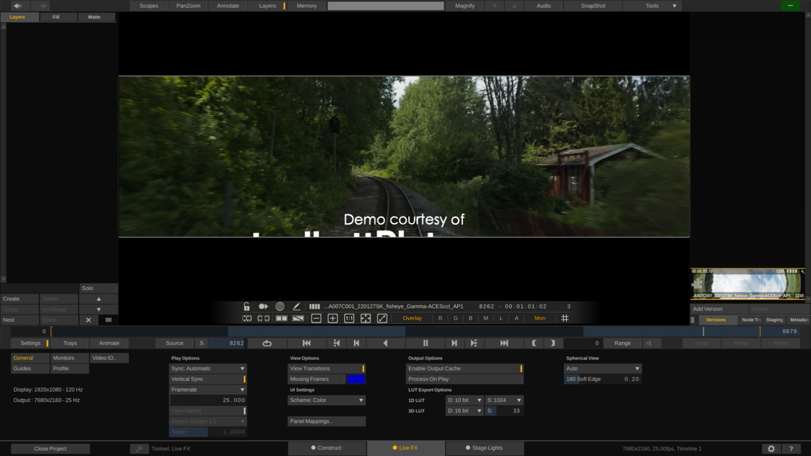
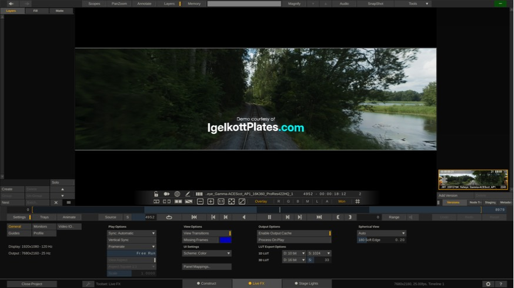
2D on the same wall" loading="lazy">An hour of fisheye fits in 2.6 TB. The same hour as equirect needs 6.6 TB
NotchLC is the codec Live FX plays fastest, and it is where the equirect gets heavy. One 8 TB drive holds three hours of fisheye or a little over one hour of equirect. ProRes 4444 is the master you download, and the smallest of all.
TB per hour (90,000 frames), mean and range over the nine free demo plates. Scale 0–8 TB.
| Format | Per frame | Read at 25 fps | Per hour | On an 8 TB drive |
|---|---|---|---|---|
| NotchLC fisheye | 28.7 MB | 718 MB/s | 2.59 TB | 3 h 5 min |
| NotchLC equirect 16K | 73.0 MB | 1,825 MB/s | 6.57 TB | 1 h 13 min |
| ProRes 4444 fisheye | 19.5 MB | 489 MB/s | 1.76 TB | 4 h 33 min |
| ProRes 4444 equirect 16K | 26.2 MB | 654 MB/s | 2.35 TB | 3 h 24 min |
Any Gen 4 drive keeps up
We tested the same Corsair drive in the Mac and in the Windows workstation. It reads as fast with APFS as with NTFS. An older Gen 3 drive still plays the fisheye, but not the equirect.
| Drive | Reads | Fisheye frames/s | Equirect frames/s |
|---|---|---|---|
| Mac · Corsair MP600 PRO NH 8 TB, APFS | 4.6–6.9 GB/s | 147–242 | 70–105 |
| Windows · same drive, NTFS, Gen 4 | 5.3–6.2 GB/s | 175–270 | 64–110 |
| Older PC · Intel 660p, Gen 3 | 1.3–1.7 GB/s | 54–75 | 15–24 |
One resample keeps more of the plate
The equirect route resamples twice: fisheye to equirect, then equirect to wall. IgelkottFisheye goes from the fisheye to the wall in one step. MTF50 is the detail where contrast has fallen to half; higher is sharper.
Cycles per output pixel; IgelkottFisheye first, a 16K equirect of the same plate through Eq->2D second. IgelkottFisheye's MTF comes from a slanted edge drawn through the shader (ISO 12233); the equirect route is measured against it on all nine plates. Up and down, the fisheye itself sets the limit for both: about 22 source pixels per degree against 43 on the wall.
Every plate tells the node what it is
A pixel tag in each plate names the camera and which way it pointed. The node reads it and draws the wall, so the two plates shot looking down come out the right way up. The centre of each 8K wall, 1:1.
The node never touches colour. The plate stays in ACEScct all the way to the wall, so you pick the output your LED volume runs: PQ, HLG or SDR. The stills here are converted to SDR for the web.
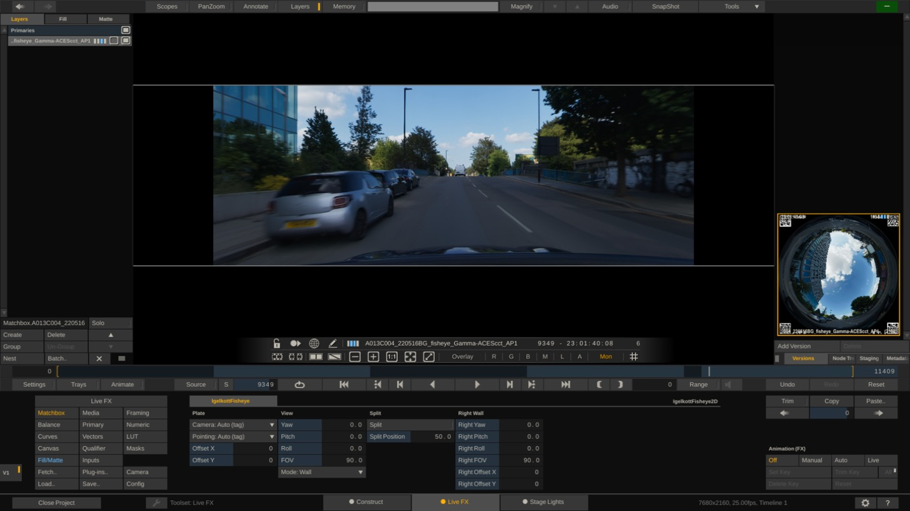
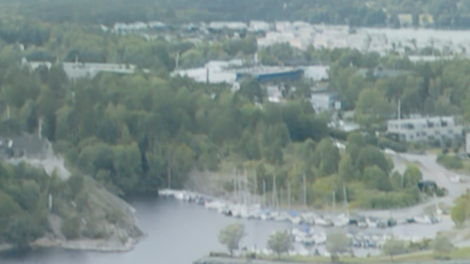
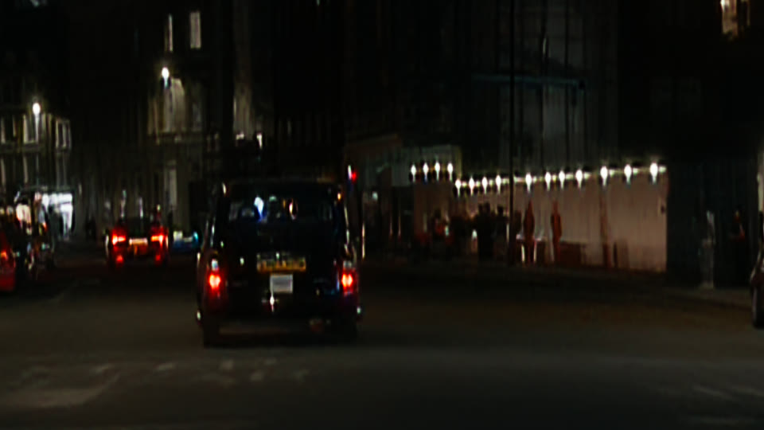
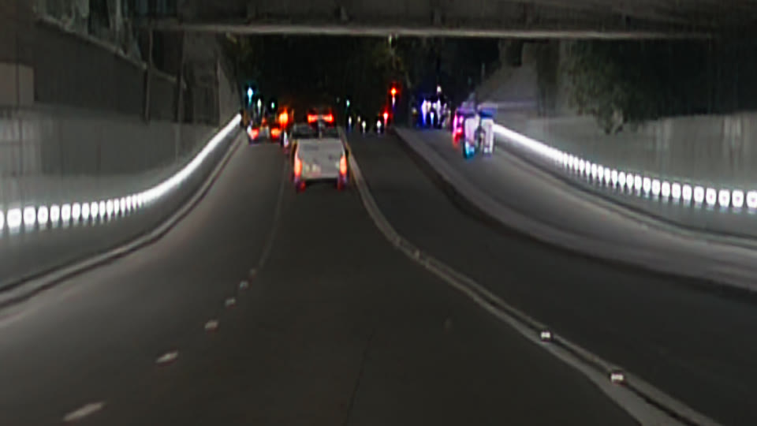
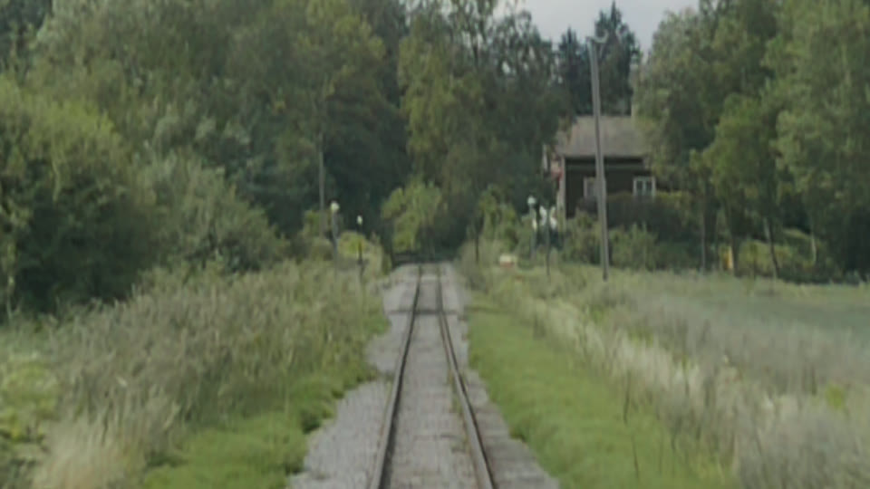
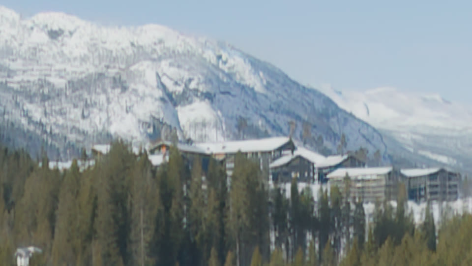
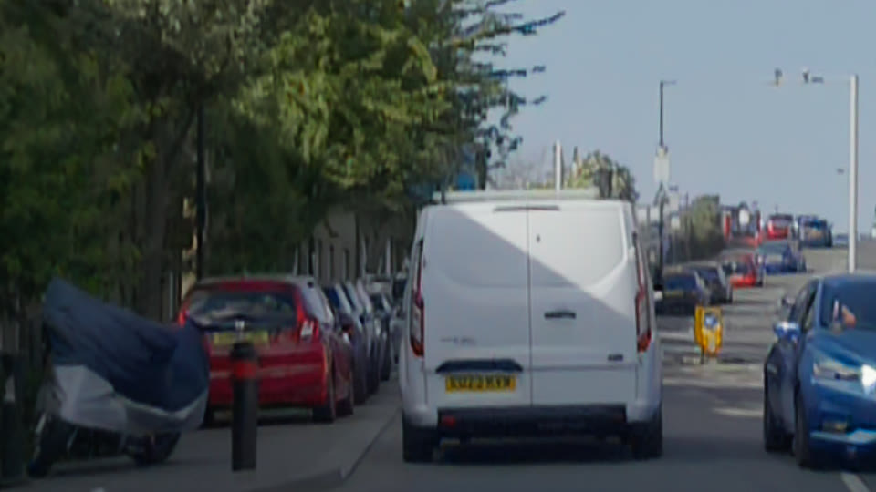
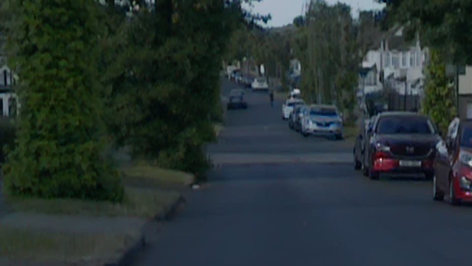
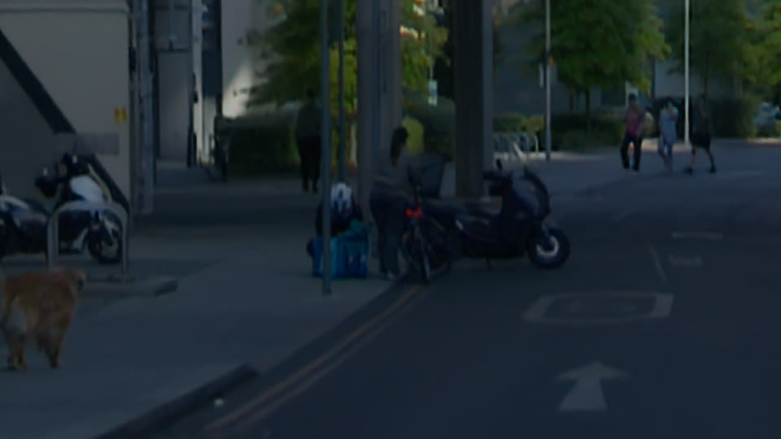
What you see on the wall is what the lens saw
Every release is drawn on a real graphics card and compared pixel by pixel with the lens model, in both Live FX and PIXERA. NotchLC keeps the picture too: the encoded plates stay within +3.7 of 1023 of the ProRes master, frame for frame.
| Check | Result |
|---|---|
| Every pixel against the lens model, Live FX and PIXERA | 129 pass |
| LED canvases from 4K to 16384 × 2160 | 55 pass |
| Sharpness (MTF50), six views | pass |
| PIXERA against Live FX | within 0.0001 |
| NotchLC against the ProRes master, 18 files | 0 to +3.7 of 1023 |
Put a plate on your wall
IgelkottFisheye 0.21 for Assimilate Live FX and PIXERA. One zip for the Mac, one for Windows. Free to use for playing Igelkott plates.